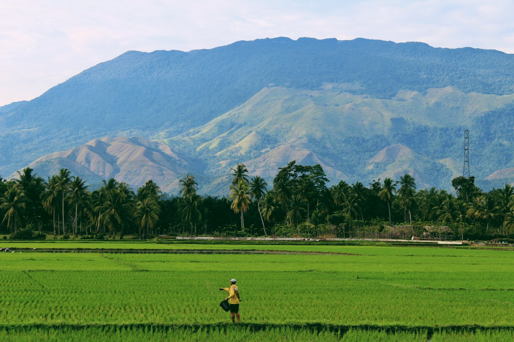
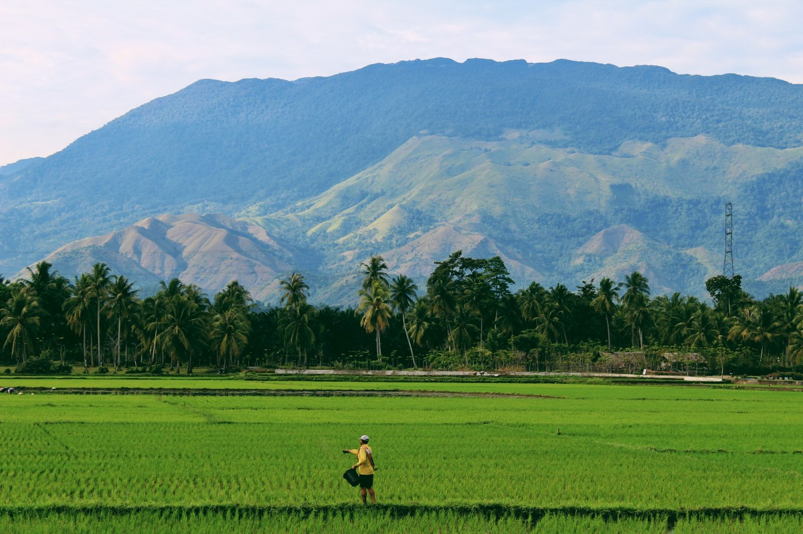

Supply of agricultural commodities in large and medium scale with a large network accross the country
we deliver high quality seedlings that withstand harsh conditions and bring optimum yield
we supply quality Pesticides in wholesale and retail from verified manufacturers and suppliers
speak with our experienced project directors and farm managers to help your farm reach its full potential
Yaku-Aken is an agribusiness company located in Jalingo, Taraba state for the purpose of farming, food processing and consultancy. The company owns a number of large sized farms in a number of areas in taraba state, including Karim-lamido, Gassol, Kona and Takum LGAs. Committing to the best practices and high standards we produce, high quality Rice seeds, Sesame seeds, Maize and Palm.
 



In the field of proceessing we use the best standards in milling our Paddy rice to get high quality long grain milled rice for retail, wholesale and export, we also processs the palm we harvest into high quality palm oil for wholesale and retail.
Our team of highly trained and experienced project coordinators also consult and collaborate with small and large scale farmers to help meet their full potential.